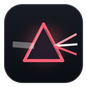

连接与电源Connectivity and power
在连接模块内右滑切换到电源控制；长按支持的模块打开二级页面。
Swipe right inside Connectivity to reveal power controls. Hold supported modules to open their detailed controls.

EVERYDAY CONTROLS
Vela 将连接开关、亮度与音量、音乐和快捷控制集中在浮动面板中，支持独立配色、图标主题与玻璃外观。
Vela brings connectivity, brightness, volume, music and quick controls together in a floating panel, with custom colors, icon themes and glass appearance.
自 2026 年 10 月 26 日启用，包含网页和刷新源后通过 Sileo 的 Release 下载；重复下载与校验下载也会累计，不代表安装成功或独立用户。
Counting Release downloads since October 26, 2026, including this website and Sileo after refreshing the source. Repeat and verification downloads count too. These are not successful installs or unique users.
正在读取更新时间 / Loading update time
在连接模块内右滑切换到电源控制；长按支持的模块打开二级页面。
Swipe right inside Connectivity to reveal power controls. Hold supported modules to open their detailed controls.
调整亮度与音量，查看音乐信息与控制播放；可使用当前封面作为音乐模块背景。
Adjust brightness and volume, view music information and control playback. Optionally use current artwork as the music module background.
在面板空白或边缘横滑切换页面。从手机已有快捷指令中选择，系统负责执行；快捷页两列最多显示四行，更多内容上下滚动。
Swipe across blank panel space or its edge to switch pages. Choose existing shortcuts on your iPhone and let the system run them. The quick page shows two columns and up to four visible rows, with vertical scrolling for overflow.
宽按钮只显示图标，可独立启用与排序；与快捷指令共用第二页，支持范围以设置中的可选项目为准。
Icon-only wide buttons can be enabled and reordered on the second page alongside shortcuts. Available actions are those offered in Settings.
配色预设、明暗外观、自定义背景、系统图标与静态／动态图标主题均可配置。玻璃效果默认关闭，可独立启用；这些功能无需激活码。
Configure color presets, light and dark appearance, custom backgrounds, system icons and static or animated icon themes. Glass is optional and disabled by default. These features do not require an activation code.
默认从左右两侧底部上滑呼出，中间保留 Home 手势。可选择首次显示 1、2、3 个或全部控制区块，二次上拉展开；首次空配置提供可跳过、可重放的三步手势引导。
Open from either bottom corner by default, leaving the middle for the Home gesture. Show one, two, three or all control sections initially, then pull up again to expand. Fresh configurations receive a skippable three-gesture tour that can be replayed in Settings.
这是浮动控制中心插件，不替代锁屏通知播放器，也不提供跨 App 全局玻璃。快捷指令执行能力取决于 iOS 和指令自身；需要交互的指令可能显示系统提示或打开快捷指令 App。Vela Studio 是独立配套 App，不包含在本插件安装包中。
This is a floating Control Center tweak. It does not replace the Lock Screen notification player or provide glass throughout other apps. Shortcut execution depends on iOS and each shortcut; interactive shortcuts may show system prompts or open the Shortcuts app. Vela Studio is a separate companion app and is not included in these packages.
最低部署版本为 iOS 16。按实际越狱环境选择一个包：RootHide 为 iphoneos-arm64e，Rootless 为 iphoneos-arm64，不可混装。安装后前往「设置 → Vela」配置；已有用户保存的呼出设置继续生效。
The minimum deployment target is iOS 16. Install one package matching your jailbreak: iphoneos-arm64e for RootHide, or iphoneos-arm64 for Rootless. Configure Settings → Vela after installation. Existing saved activation gestures are preserved.
RootHide 与 Rootless 双包均包含 arm64 和 arm64e 切片，并分别构建验包。中英文界面与安装效果尚待真机验收；编译和验包不能证明所有 iOS 版本的兼容性。
The RootHide and Rootless packages each contain arm64 and arm64e slices and are built and inspected separately. On-device installation and bilingual UI validation remain pending; build and package checks do not establish compatibility on every iOS version.
0.4.20 补全控制面板、模块配置、快捷指令、配色、主题说明与错误提示的中英文文本，跟随系统语言显示。
Version 0.4.20 completes Chinese and English text for the panel, module layout, shortcuts, colors, theme guidance and error messages, following the system language.